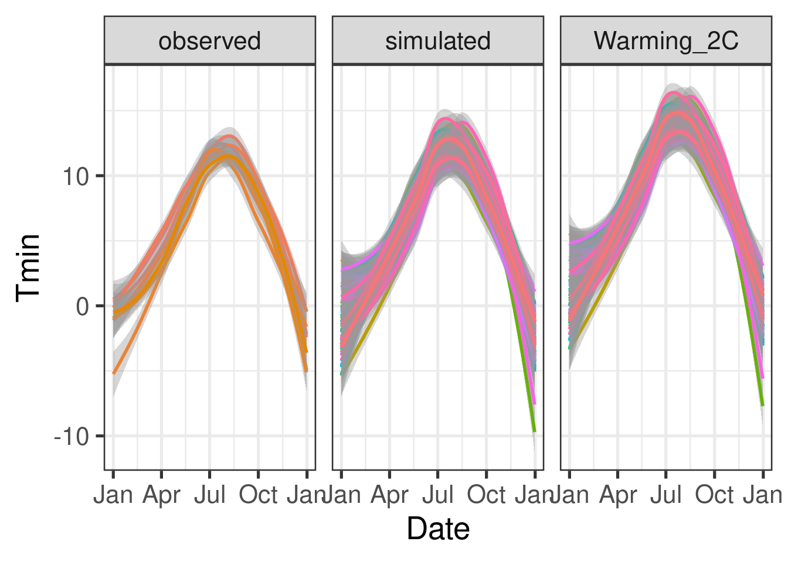
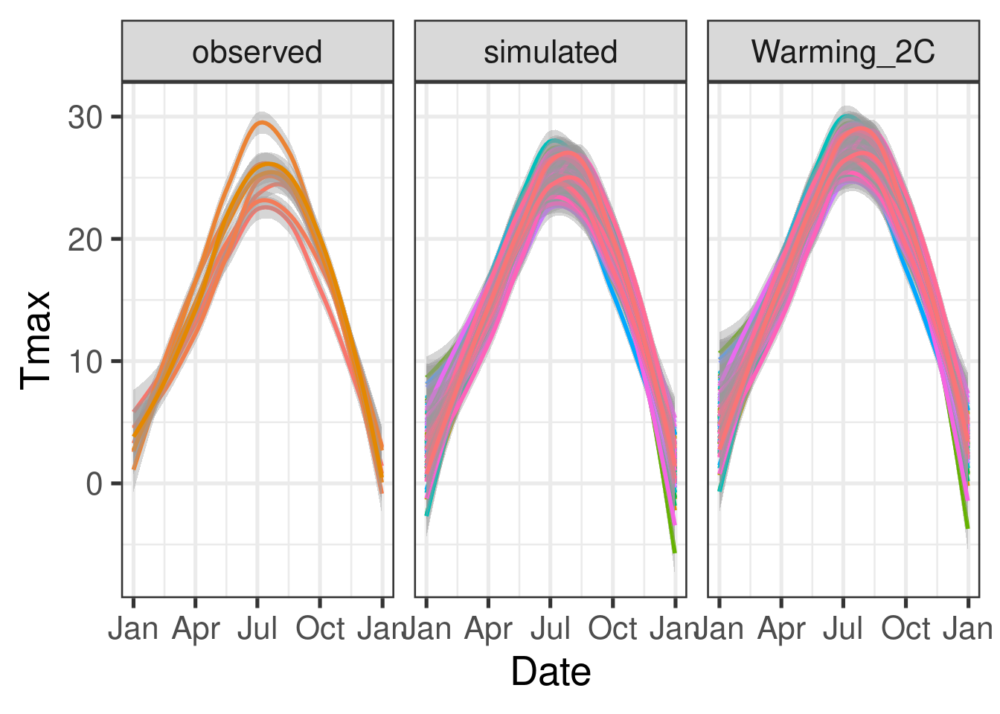
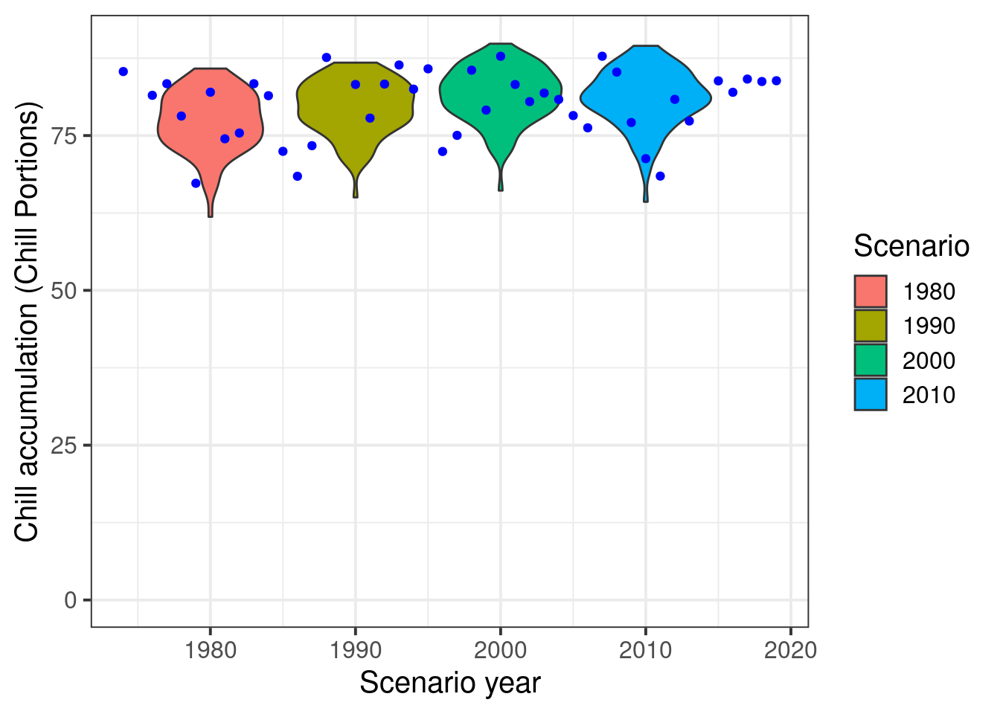
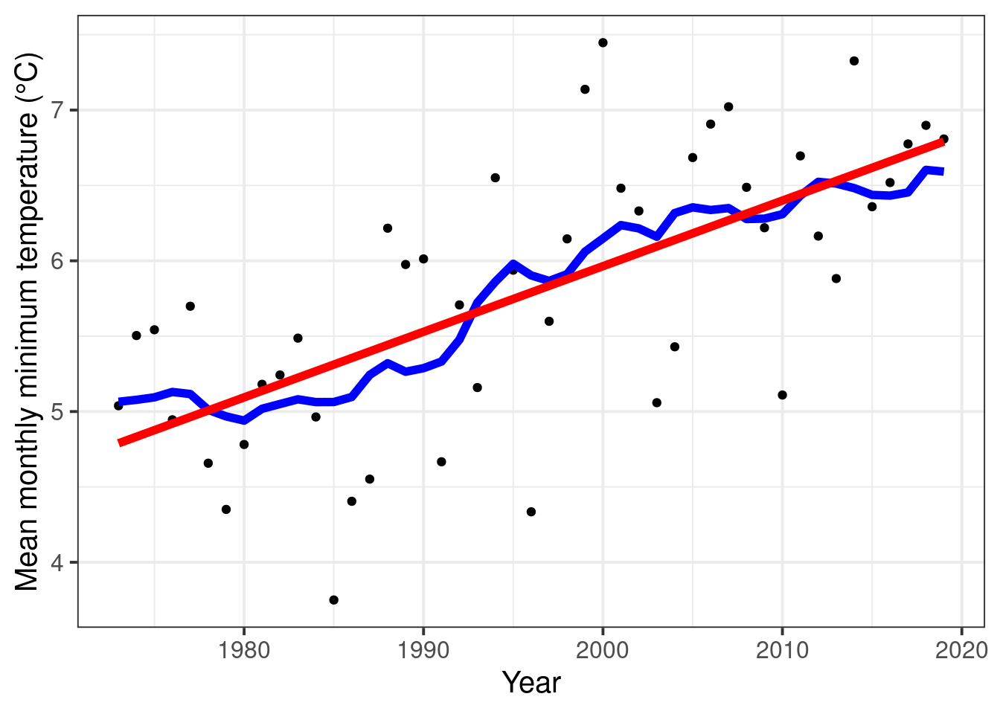
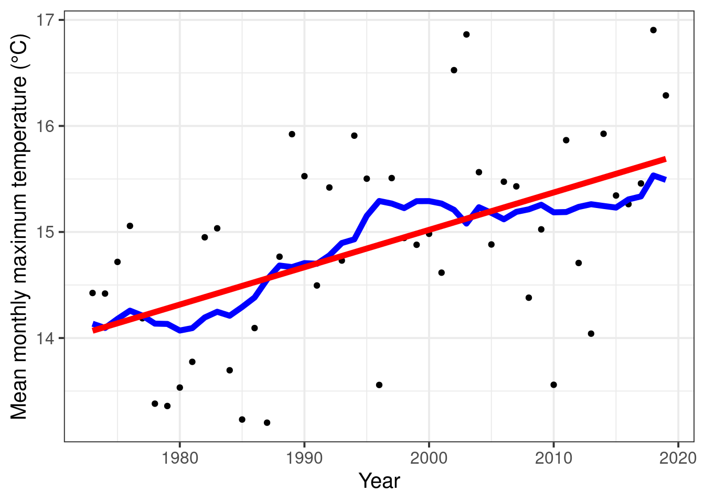

Chapter 14 Historic temperature scenarios
Learning goals for this lesson
- Understand how we can include temperature scenarios while generating synthetic weather
- Be able to produce temperature scenarios with arbitrary change scenarios imposed
- Understand the difference between absolute and relative temperature scenarios and the importance of baselines (for relative scenarios)
- Learn how to produce temperature scenarios that represent past points in time from historic temperature records
- Learn how to produce synthetic temperature scenarios for past points in time and efficiently compute agroclimatic metrics for them
14.1 Climate change scenarios
We recently learned how to use a weather generator accessed by chillR to produce agroclimatic profiles for a given location. We calibrated the weather generator with historically observed temperature data, and the profile we produced was representative of climatic conditions during the period used for calibration. As you may already have guessed, the weather generator can also produce scenarios that represent different climatic conditions. Specifically, the temperature_generation function contains a parameter called temperature_scenario, which we can use to send the necessary instructions to the weather generator.
The temperature_scenario parameter requires a data.frame with columns Tmin and Tmax. Each of these columns should have 12 values that specify changes to the mean minimum and maximum temperatures, respectively, for each month of the year. If we don’t specify this parameter, the function uses the default object - a data.frame with zeros for all changes.
Let’s see how this works in practice. Our first climate change scenario will be simple. We’ll just add arbitrary numbers to all the monthly \(T_{min}\) and \(T_{max}\) values.
# Here's the call from the earlier lesson. We don't have to run this again.
Temp <- temperature_generation(KA_weather,
years = c(1998,2005),
sim_years = c(2001,2100))
# Now we make a temperature scenario that raises all temperatures by 2°C| Tmin | Tmax |
|---|---|
| 2 | 2 |
| 2 | 2 |
| 2 | 2 |
| 2 | 2 |
| 2 | 2 |
| 2 | 2 |
| 2 | 2 |
| 2 | 2 |
| 2 | 2 |
| 2 | 2 |
| 2 | 2 |
| 2 | 2 |
Temp_2 <- temperature_generation(KA_weather,
years = c(1998,2005),
sim_years = c(2001,2100),
temperature_scenario = change_scenario)
# As before, we'll make a data.frame that contains all
# our data, so we can take a look at it.
Temperature_scenarios <- KA_weather %>%
filter(Year %in% 1998:2005) %>%
cbind(Data_source = "observed") %>%
rbind(Temp[[1]] %>%
select(c(Year, Month, Day, Tmin, Tmax)) %>%
cbind(Data_source = "simulated")
) %>%
rbind(Temp_2[[1]] %>%
select(c(Year, Month, Day, Tmin, Tmax)) %>%
cbind(Data_source = "Warming_2C")
) %>%
mutate(Date = as.Date(ISOdate(2000,
Month,
Day)))Since the structure of this dataset is the same as we had in the earlier lesson, we can use identical code to illustrate it (just have to replace the data.frame name.
ggplot(data = Temperature_scenarios,
aes(Date,Tmin)) +
geom_smooth(aes(colour = factor(Year))) +
facet_wrap(vars(Data_source)) +
theme_bw(base_size = 20) +
theme(legend.position = "none") +
scale_x_date(date_labels = "%b")
ggplot(data = Temperature_scenarios,
aes(Date,Tmax)) +
geom_smooth(aes(colour = factor(Year))) +
facet_wrap(vars(Data_source)) +
theme_bw(base_size = 20) +
theme(legend.position = "none") +
scale_x_date(date_labels = "%b")
This was an arbitrary climate scenario. Nobody expects future changes to be so uniformly distributed across all months, and this certainly hasn’t happened in the past. This is, however, pretty similar to my first attempt at climate change scenario modeling. Here’s the corresponding figure from my first chilling paper.

But let’s try to make scenarios that are a bit more realistic. For this, we start with scenarios that represent particular years from the historic record. As we discussed already, we could of course simply look at temperatures recorded during a particular year. We may, however, also be interested in what temperature conditions should have been considered normal at the time, rather than what actually happened. Such a perspective can make it much easier to identify historic trends, because we can now try to evaluate the gradual shift in climate (the collection of plausible weather) rather than just looking at the random weathers we’ve been dealt in the past, where trends are often obscured by interannual variation and possibly by some freaky outliers that distort our trend analysis.
14.2 Making historic temperature scenarios
To make this a meaningful exercise, we’ll need a long-term dataset. We’ve already seen how to get this and prepare it for use in chillR.
# download weather station list for the vicinity of Bonn
station_list <- handle_gsod(action = "list_stations",
location=c(7.1,50.8))
# download weather data for Cologne/Bonn airport and convert it to chillR format
Bonn_weather <- handle_gsod(action = "download_weather",
location = station_list$chillR_code[1],
time_interval = c(1973,2019)) %>%
handle_gsod()
# check record for missing data
fix_weather(Bonn_weather$`KOLN BONN`)$QC
# (incidentally almost all gaps are for years covered by the KA_weather dataset)
Bonn_patched <- patch_daily_temperatures(
weather = Bonn_weather$`KOLN BONN`,
patch_weather = list(KA_weather))
fix_weather(Bonn_patched)$QC
# There are still 4 days missing here, out of 47 years -
# let's simply interpolate these gaps now
Bonn<-fix_weather(Bonn_patched)
Bonn_temps<-Bonn$weatherWe could now easily run the weather generator to produce weather scenarios that correspond to the normal climate between 1973 and 2019. Since temperatures have been gradually rising over this period, the best guess for the year that would best represent this scenario would be the median of the time period, which is 1996. But let’s say we’re not interested in 1996, but in scenarios representing 1980, 1990, 2000 and 2010. How can we make such scenarios?
The way to address this challenge is to examine the historic temperature record to determine the changes that happened between the year we’re interested in and the year our temperature data represent. Let’s call this representative year the baseline of our observed temperature data, and the years we want to make simulations for the simulation years.
chillR has a function that helps us make temperature scenarios from temperature records, which is called temperature_scenario_from_records. Here’s how we can use it:
This scenario contains several elements:
data: a data.frame specifying \(T_{min}\) and \(T_{max}\) values that are representative of the year of interestscenario_year: the year we’re interested inreference_year: for scenarios that describe temperature changes (which is not the case here), this would specify relative to what year these changes are expressed (NA in this case)scenario_type: specifies whether this scenario contains absolute temperatures for the year of interest (true in this case), or whether it expressed changes relative to another yearlabels: contains additional information we can attach to scenarios. In this case, this says “running mean scenario”. See below for what this means.
Here’s just the data element:
| Tmin | Tmax |
|---|---|
| -1.6792115 | 4.374074 |
| -2.3167944 | 5.580546 |
| 0.8537634 | 9.763560 |
| 2.8043210 | 13.474444 |
| 6.8980884 | 18.016248 |
| 10.4950617 | 21.370494 |
| 12.3964158 | 23.175627 |
| 11.8548387 | 23.186141 |
| 9.2693827 | 19.827531 |
| 5.8487455 | 14.443608 |
| 2.2375309 | 9.076790 |
| 0.1126643 | 6.024134 |
Now it’s time to refresh your memory on a warning message we received when we first started running our weather generator. This contained the following information:
- scenario doesn’t contain named elements - consider using the following element names: ‘data’, ‘reference_year’,‘scenario_type’,‘labels’
- setting scenario_type to ‘relative’
- Reference year missing - can’t check if relative temperature scenario is valid
Maybe we can understand now what this meant. Our input for the scenario at that time was simply a data.frame, but we’ve just seen that scenarios can contain more information. The temperature_generation recognized this and decided to warn us. This is because all this information has a purpose, and if it’s not provided, temperature_generation has to make some assumptions on what it’s supposed to do with the information. The second element of the warning indicates that the scenario_type was automatically set to ‘relative’. The function contains some decision rules for deciding whether a temperature scenario specifies absolute or relative temperatures, and here we are informed about what the outcome of that decision was. Finally, we are informed that the reference year is missing. This means that we’ve specified a relative temperature scenario, but we didn’t specify relative to what. In our case, this was simply the year that the historic record represented (e.g. the median year of the observed record), but this isn’t always clear, as we’ll see when we start talking about future projections.
Well, in the scenario we just built here, we shouldn’t get such warning messages, because now we have a comprehensive list that contains all the information the temperature_generation function needs. Let’s try to run it with our new scenario:
temps_1980 <- temperature_generation(weather = Bonn_temps,
years = c(1973,2019),
sim_years = c(2001,2100),
temperature_scenario = scenario_1980)We still got a warning message:
“Absolute temperature scenario specified - calibration weather record only used for simulating temperature variation, but not for the means”
This means that the weather generator evaluated the calibration dataset with respect to variation of temperatures around the mean temperatures. It then generated a dataset with means (for \(T_{min}\) and \(T_{max}\) of each month) that correspond to the (absolute) temperature scenario we provided, and variation similar to that in the observed record. This is what we wanted, so we’re good.
If we want to convert this absolute temperature scenario into a relative scenario, we have to specify a baseline scenario to compare it with. In our case, 1996 is a good choice, because that is the median year of our observed record. So let’s make a scenario for that year:
This is now also an absolute temperature scenario. We can produce a relative change scenario by applying the temperature_scenario_baseline_adjustment function:
relative_scenario <- temperature_scenario_baseline_adjustment(
baseline = scenario_1996,
temperature_scenario = scenario_1980)Now we have a relative change scenario - a list with the following elements:
data: again a data.frame with \(T_{min}\) and \(T_{max}\) columns, but now containing relative changes between 1996 and 1980 (all negative values, because 1980 was cooler than 1996)scenario_year: still 1980reference_year: now 1996scenario_type: now ‘relative’labels: still ‘running mean scenario’
We can now try to apply this scenario in a similar way to what we did earlier:
temps_1980<-temperature_generation(weather = Bonn_temps,
years = c(1973,2019),
sim_years = c(2001,2100),
temperature_scenario = relative_scenario)This time we got away without a warning message, because we provided the temperature_generation function with everything it needed to know.
So let’s now make all the scenarios we had in mind. This is facilitated by most of the functions also accepting vectors and lists, rather than just single numbers and data.frames.
all_past_scenarios <- temperature_scenario_from_records(
weather = Bonn_temps,
year = c(1980,
1990,
2000,
2010))
adjusted_scenarios <- temperature_scenario_baseline_adjustment(
baseline = scenario_1996,
temperature_scenario = all_past_scenarios)
all_past_scenario_temps <- temperature_generation(
weather = Bonn_temps,
years = c(1973,2019),
sim_years = c(2001,2100),
temperature_scenario = adjusted_scenarios)
save_temperature_scenarios(all_past_scenario_temps, "data", "Bonn_hist_scenarios")The all_past_scenario_temps object is a list that now contains 100 years of synthetic weather for all the past scenarios we had in mind.
Let’s say we now want to calculate chill accumulation again. We could go back and find all the functions we used before and apply them to each of the four temperature scenarios we just generated. However, we can also apply a chillR function, tempResponse_daily_list that has already automated all this. I’ll also make a simple frost model and select only the Dynamic Model and GDH Model for the evaluation.
frost_model <- function(x)
step_model(x,
data.frame(
lower=c(-1000,0),
upper=c(0,1000),
weight=c(1,0)))
models <- list(Chill_Portions = Dynamic_Model,
GDH = GDH,
Frost_H = frost_model)chill_hist_scenario_list <- tempResponse_daily_list(all_past_scenario_temps,
latitude = 50.9,
Start_JDay = 305,
End_JDay = 59,
models = models)Let’s make sure to save these scenarios, because we’ll need them again in the lessons on [Making CMPI6 scenarios] and Making CMIP5 scenarios with the ClimateWizard. To make sure I remember later what this was about, I’ll make sure that the place name and the start and end dates of the considered period are included in the file name. Before I save the file, I’ll remove all the incomplete winters from the record.
chill_hist_scenario_list <- lapply(chill_hist_scenario_list,
function(x) x %>%
filter(Perc_complete == 100))
save_temperature_scenarios(chill_hist_scenario_list, "data","Bonn_hist_chill_305_59")scenarios <- names(chill_hist_scenario_list)[1:4]
all_scenarios <- chill_hist_scenario_list[[scenarios[1]]] %>%
mutate(scenario = as.numeric(scenarios[1]))
for (sc in scenarios[2:4])
all_scenarios <- all_scenarios %>%
rbind(chill_hist_scenario_list[[sc]] %>%
cbind(
scenario=as.numeric(sc))
) %>%
filter(Perc_complete == 100)
# Let's compute the actual 'observed' chill for comparison
actual_chill <- tempResponse_daily_list(Bonn_temps,
latitude=50.9,
Start_JDay = 305,
End_JDay = 59,
models)[[1]] %>%
filter(Perc_complete == 100)
ggplot(data = all_scenarios,
aes(scenario,
Chill_Portions,
fill = factor(scenario))) +
geom_violin() +
ylab("Chill accumulation (Chill Portions)") +
xlab("Scenario year") +
theme_bw(base_size = 15) +
ylim(c(0,90)) +
geom_point(data = actual_chill,
aes(End_year,
Chill_Portions,
fill = "blue"),
col = "blue",
show.legend = FALSE) +
scale_fill_discrete(name = "Scenario",
breaks = unique(all_scenarios$scenario)) 
We should also save the observed chill data, so we can use it in in the lessons on [Making CMPI6 scenarios] and Making CMIP5 scenarios with the ClimateWizard.
Now we have chill distribution scenarios representing the years 1980, 1990, 2000 and 2010. We don’t see too much change here, which means we probably won’t have to worry about chill deficiencies in Bonn any time soon.
Note that all the annual scenarios so far were based on running means of \(T_{min}\) and \(T_{max}\). This seems appropriate because in times of accelerating climate change, estimating temperatures at any given time via clean mathematical equations seems rather challenging. However, chillR also contains the option of using linear regression to determine these representative temperatures for a particular historic scenario. Let’s quickly look at what kind of difference this makes in this case.
temperature_means <-
data.frame(Year = min(Bonn_temps$Year):max(Bonn_temps$Year),
Tmin = aggregate(Bonn_temps$Tmin,
FUN = "mean",
by = list(Bonn_temps$Year))[,2],
Tmax=aggregate(Bonn_temps$Tmax,
FUN = "mean",
by = list(Bonn_temps$Year))[,2]) %>%
mutate(runn_mean_Tmin = runn_mean(Tmin,15),
runn_mean_Tmax = runn_mean(Tmax,15))
Tmin_regression <- lm(Tmin~Year,
temperature_means)
Tmax_regression <- lm(Tmax~Year,
temperature_means)
temperature_means <- temperature_means %>%
mutate(regression_Tmin = Tmin_regression$coefficients[1]+
Tmin_regression$coefficients[2]*temperature_means$Year,
regression_Tmax = Tmax_regression$coefficients[1]+
Tmax_regression$coefficients[2]*temperature_means$Year
)
ggplot(temperature_means,
aes(Year,
Tmin)) +
geom_point() +
geom_line(data = temperature_means,
aes(Year,
runn_mean_Tmin),
lwd = 2,
col = "blue") +
geom_line(data = temperature_means,
aes(Year,
regression_Tmin),
lwd = 2,
col = "red") +
theme_bw(base_size = 15) +
ylab("Mean monthly minimum temperature (°C)")
ggplot(temperature_means,
aes(Year,
Tmax)) +
geom_point() +
geom_line(data = temperature_means,
aes(Year,
runn_mean_Tmax),
lwd = 2,
col = "blue") +
geom_line(data = temperature_means,
aes(Year,
regression_Tmax),
lwd = 2,
col = "red") +
theme_bw(base_size = 15) +
ylab("Mean monthly maximum temperature (°C)")
We can see that there’s a bit of a difference between the running mean function (blue) and the linear regression line (red). Sometimes this can be important, and we should expect the difference to become more pronounced as climate change progresses.
Exercises on generating historic temperature scenarios
Please document all results of the following assignments in your learning logbook.
- For the location you chose for previous exercises, produce historic temperature scenarios representing several years of the historic record (your choice).
- Produce chill distributions for these scenarios and plot them.